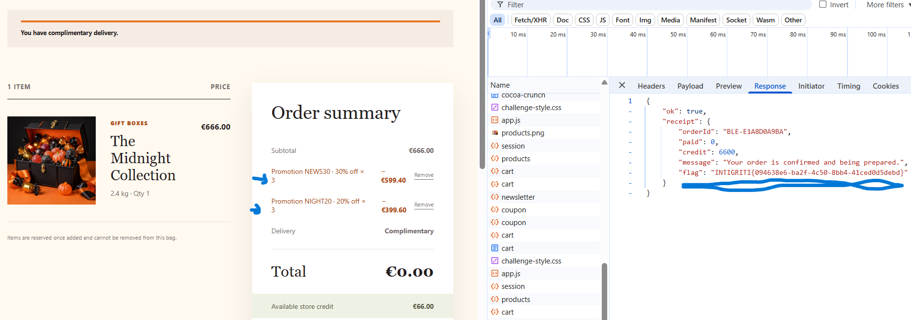

Working from the browser
I was travelling while testing this challenge, so I was limited to Chrome and its
DevTools. I did not have my usual interception proxy available. I started by comparing
the requests in the Network tab, then noticed that the API details and session stayed
the same while the storefront page—and therefore the Referer—changed.
To make the flow repeatable, I used the publicly available app.js and AI
assistance to shape a small browser-console script. It registered a fresh newsletter
email, applied both coupons, and recorded each response and cart total. That gave me a
reliable way to test the behavior from several pages without needing anything beyond
the browser I had with me.
The intended restriction
In a fresh anonymous session, adding the same promotion twice normally returned
409 coupon_already_applied. The restriction was expected to apply to the
coupon and the current shopping session, regardless of where the request came from.
Changing the storefront page
I compared the rejected and accepted requests in Chrome DevTools. The API endpoint,
method, JSON body, origin, and session cookie stayed the same. The notable difference
was the storefront page that produced the request, reflected in the HTTP
Referer header.
POST /api/cart/coupon
{"code":"NEWS30"}
← same session, but a different storefront page → 200 OKA fresh newsletter registration was also performed during each reproduction, so this report does not isolate whether the page context, the registration flow, or their combination selected the faulty server-side path.
Reproducing the bypass
- Start a fresh anonymous session and add
midnight-vault(€666.00) to the cart. - From
/store, register a new newsletter email and applyNEWS30andNIGHT20. - Navigate to another product page without clearing the session, register another email, and repeat the two coupon requests.
- Repeat from additional storefront pages until the promotion discounts exceed the cart value.
const apply = code => fetch("/api/cart/coupon", {
method: "POST",
credentials: "same-origin",
headers: { "Content-Type": "application/json" },
body: JSON.stringify({ code })
});
await apply("NEWS30");
await apply("NIGHT20");
Requests that previously returned 409 returned 200 from the
additional pages. The cart retained the earlier promotions and added the same codes
again.
Checkout result
After the repeated applications, the cart displayed a €0.00 total while retaining the full €66.00 store-credit balance. The checkout endpoint accepted an empty JSON body:
POST /api/checkout
{}
HTTP/1.1 200 OK
{
"ok": true,
"receipt": {
"paid": 0,
"credit": 6600,
"message": "Your order is confirmed and being prepared."
}
}
Impact
An unauthenticated customer could reuse promotions across storefront pages in one session. The discounts accumulated beyond 100%, resulting in a free order without spending the available store credit.
What should change?
- Track coupon redemption against a stable server-side cart or session identifier and the coupon code.
- Do not use the requesting page or HTTP
Refererto decide whether a coupon was already used. - Keep newsletter registration separate from coupon eligibility.
- Revalidate promotion uniqueness and discount limits during checkout.